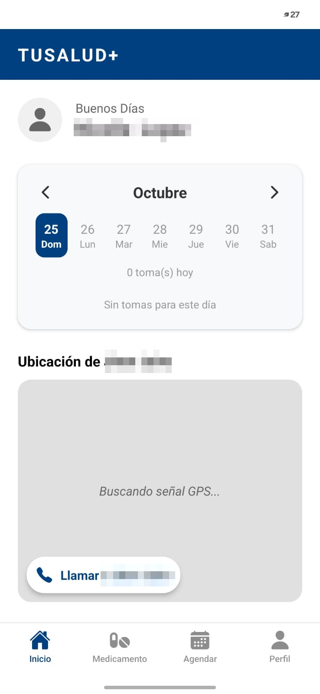

Tu bienestar, nuestra prioridad
TuSalud+ te ayuda a no olvidar ningún medicamento ni cita médica. Estamos buscando pacientes y cuidadores que quieran probar la aplicación antes de su lanzamiento y ayudarnos a mejorarla.
Participar en la prueba piloto es gratis y sin compromiso. Por ahora, solo para celulares Android.
¿Cómo vas a usar TuSalud+?
Elige tu perfil y te contamos qué hace la aplicación por ti y cómo inscribirte para probarla.
Soy Paciente
Tomo varios medicamentos o tengo citas médicas frecuentes y quiero que el celular me avise a la hora exacta, con un aviso grande y tres botones claros.
Quiero probarla como paciente →Soy Cuidador
Cuido a mi mamá, a mi papá o a otra persona y quiero organizar sus medicamentos y citas, y saber si cumplió sin tener que llamar a cada rato.
Quiero probarla como cuidador →Una app, dos cuentas conectadas
TuSalud+ conecta la cuenta del paciente con la de su cuidador mediante un código de cuatro caracteres. Cada uno hace lo suyo, y los dos están tranquilos.
El cuidador registra
Escribe el medicamento, la dosis, cada cuántas horas y por cuántos días. La app programa todas las tomas del tratamiento de una vez.
El paciente recibe el aviso
A la hora exacta, el celular suena con el nombre del medicamento y la cantidad. Un toque en «Ya lo tomé» y listo.
El cuidador lo ve
Cada toma queda marcada como cumplida, pospuesta u omitida. Sin llamadas de control, sin discusiones.

Lo que ve el paciente
Un aviso grande con el medicamento, la dosis y tres botones claros.

Lo que ve el cuidador
El calendario de tomas de su familiar y, con Premium, su ubicación.
¿Por qué participar?
TuSalud+ es un proyecto en desarrollo hecho en Manizales. Antes de lanzarla queremos que la usen familias reales y nos digan qué funciona y qué no.
- Acceso anticipado y sin costo. Usas la aplicación antes que nadie, sin pagar nada y sin dar datos de tarjeta.
- Te acompañamos. Nuestro equipo te ayuda a instalarla, a crear la cuenta y a vincular a tu familiar. Al final, solo te pedimos contarnos tu experiencia en una encuesta o entrevista corta.
- Tu opinión cambia la app. Lo que nos cuentes se convierte en mejoras reales antes del lanzamiento.
- Tus datos, protegidos. No vendemos ni compartimos tu información. Cumplimos la Ley 1581 de 2012.
- Te puedes retirar cuando quieras. Sin permanencia ni letra pequeña.
- Para celulares Android. Por ahora, la prueba piloto funciona solo en Android.
Sé de los primeros en probar TuSalud+
Elige tu perfil e inscríbete. Te contactamos en menos de 24 horas hábiles.